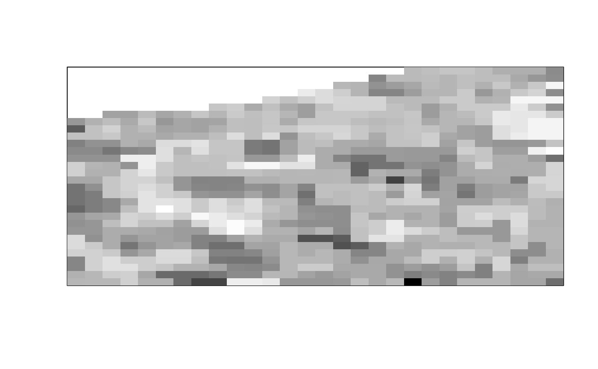

Given a stack of images img, use the first frames_per_set of them to
create one cross-correlated brightness image, the next frames_per_set of
them to create the next and so on to get a time-series of cross-correlated
brightness images.
cc_brightness_timeseries(img, frames_per_set, overlap = FALSE, ch1 = 1,
ch2 = 2, thresh = NULL, detrend = FALSE, quick = FALSE,
filt = NULL, parallel = FALSE)
Arguments
| img |
A 4-dimensional array of images indexed by img[y, x, channel, frame] (an object of class ijtiff::ijtiff_img). The image to perform the
calculation on. To perform this on a file that has not yet been read in,
set this argument to the path to that file (a string). |
| frames_per_set |
The number of frames with which to calculate the
successive cross-correlated brightnesses.
This may discard some images, for example if 175 frames are in the input and
frames_per_set = 50, then the last 25 are discarded. If bleaching or/and
thresholding are selected, they are performed on the whole image stack before
the sectioning is done for calculation of cross-correlated brightnesses. |
| overlap |
A boolean. If TRUE, the windows used to calculate brightness
are overlapped, if FALSE, they are not. For example, for a 20-frame image
series with 5 frames per set, if the windows are not overlapped, then the
frame sets used are 1-5, 6-10, 11-15 and 16-20; whereas if they are
overlapped, the frame sets are 1-5, 2-6, 3-7, 4-8 and so on up to 16-20. |
| ch1 |
A natural number. The index of the first channel to use. |
| ch2 |
A natural number. The index of the second channel to use. |
| thresh |
Do you want to apply an intensity threshold prior to
calculating cross-correlated brightness (via
autothresholdr::mean_stack_thresh())? If so, set your thresholding method
here. If this is a single value, that same threshold will be applied to
both channels. If this is a length-2 vector or list, then these two
thresholds will be applied to channels 1 and 2 respectively. A value of
NA for either channel gives no thresholding for that channel. |
| detrend |
Detrend your data with detrendr::img_detrend_rh(). This is
the best known detrending method for brightness analysis. For more
fine-grained control over your detrending, use the detrendr package. To
detrend one channel and not the other, specify this as a length 2 vector. |
| quick |
FALSE repeats the detrending procedure (which has some inherent
randomness) a few times to hone in on the best detrend. TRUE is quicker,
performing the routine only once. FALSE is better.
|
| filt |
Do you want to smooth (filt = 'smooth') or median (filt = 'median') filter the cross-correlated brightness image using
smooth_filter() or median_filter() respectively? If selected, these are
invoked here with a filter radius of 1 and with the option na_count = TRUE. A value of NA for either channel gives no thresholding for that
channel. If you want to smooth/median filter the cross-correlated
brightness image in a different way, first calculate the cross-correlated
brightnesses without filtering (filt = NULL) using this function and then
perform your desired filtering routine on the result. |
| parallel |
Would you like to use multiple cores to speed up this
function? If so, set the number of cores here, or to use all available
cores, use parallel = TRUE. |
Value
An array where the \(i\)th slice is the \(i\)th cross-correlated
brightness image.
See also
Examples
#> Reading two_ch.tif: an 8-bit, 30x28 pixel image of unsigned
#> integer type with 2 channels and 100 frames . . .
#> � Done.
#> Using basic display functionality.
#> * For better display functionality, install the EBImage package.
#> * To install `EBImage`:
#> - Install `BiocManager` with `install.packages("BiocManager")`.
#> - Then run `BiocManager::install("EBImage")`.
